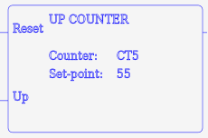
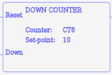
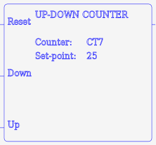
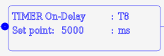
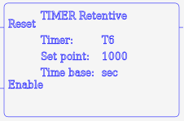
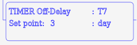
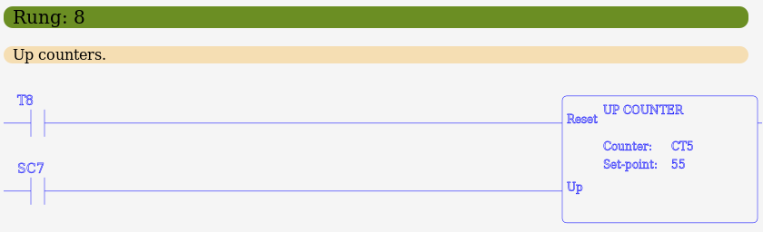
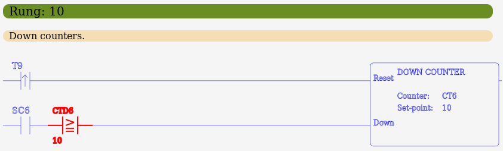
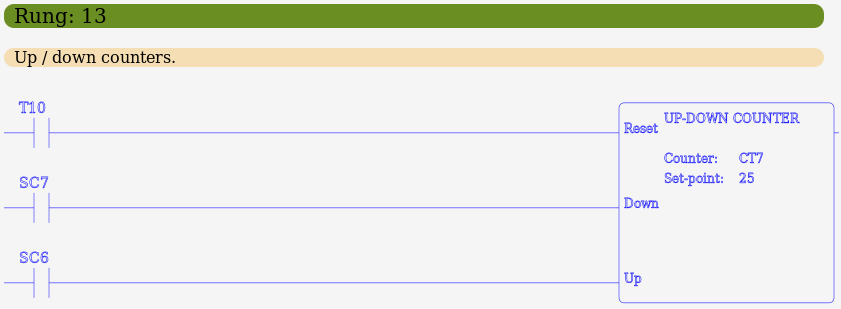
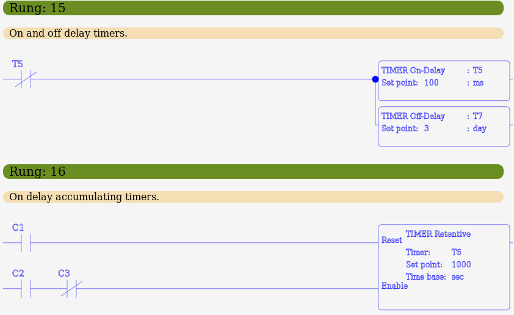

MBLogic
for an open world in automation
MBLogic
for an open world in automation
Counter and Timer Instructions
| Instr. | Descr. | # Param | T | CT | DS | DD | KInt | KDInt | Time Base | Symbol |
|---|---|---|---|---|---|---|---|---|---|---|
| CNTU | Count up | 2 | X | X | X | X | X |  | ||
| CNTD | Count down | 2 | X | X | X | X | X |  | ||
| UDC | Up / down counter | 2 | X | X | X | X | X |  | ||
| TMR | On delay timer | 3 | X | X | X | X |  | |||
| TMRA | On delay accum. timer | 3 | X | X | X | X |  | |||
| TMROFF | Off delay timer | 3 | X | X | X | X |  |
Counters
Counter instructions come in three types:
- CNTU - Up counter. This counts up by one each time the logic stack transitions from off to on. If the logic stack value (top - 1) turns on, the counter is reset.
- CNTD - Down counter. This counts down by one each time the logic stack transitions from off to on. If the logic stack value (top - 1) turns on, the counter is reset.
- UDC - Up/down counter. This counts up by one each time the top of the logic stack transitions from off to on, and down by one each time the logic stack value (top - 1) transitions from off to on. When the logic stack value (top - 2) turns on, the counter is reset
All counter instructions take two parameters. The first is a counter number, and the second is the counter preset. The counter preset may be either a constant or a register address. When the present value of the counter is equal to the preset, the counter status bit turns on. The address of the counter status bit is the same as the counter number. The present value of the counter is stored in the counter data register (CTD) of the same number as the counter number. E.g. for counter CT5, the counter status bit is also CT5, and the present count is in CTD5.
Example:
// Up counter. NETWORK 1 STR C1 STR C2 CNTU CT5 155793 STR CT5 OUT Y1 // Down counter. NETWORK 2 STR C11 STR C12 CNTD CT15 DD11 STR CT15 OUT Y11 // Up/down counter. NETWORK 3 STR C21 STR C22 STR C23 UDC CT25 DS5 STR CT25 OUT Y21 // Examine counter present values. NETWORK 7 STRE CTD15 157 OUT Y112
Timers
Timers come in three types:
- TMR - On delay timer. The timer begins timing up when the top of the logic stack is true, and resets when the top of the logic stack is false. When the present value reaches the preset value, the timer status bit turns on.
- TMRA - On delay accumulating timer. The timer begins timing up when the top of the logic stack is true, and stops when the top of the logic stack is false. When the top of the logic stack becomes true, it continues timing from the point at which it stopped. When the logic stack value (top - 1) turns on, the timer is reset. When the present value reaches the preset value, and the top of the logic stack is true, the timer status bit turns on.
- TMROFF - Off delay timer. The timer begins timing when the top of the logic stack transitions from on to off. When the timer begins timing, the status bit turns on immediately. The status bit turns off when the timer reaches the preset.
All timer instructions take three parameters. The first is the timer address. The second is the timer preset. The timer preset may be either a constant or a register address. The third parameter is the time base. This may be either "ms" (milliseconds), "sec" (seconds), "min" (minutes), "hour" (hours), or "day" (days).
Example:
// On delay timer. NETWORK 4 STR X1 TMR T5 25000 ms STR T5 OUT Y51 // Accumulating on delay timer. NETWORK 5 STR X11 STR X12 TMRA T6 DS9 sec STR T6 OUT Y52 // Off delay timer. NETWORK 6 STR X62 TMROFF T192 DS412 min STR T192 OUT Y57 // Examine timer present values. NETWORK 7 STRE TD6 97 OUT Y120
Ladder Examples
The following shows examples in ladder format.
   